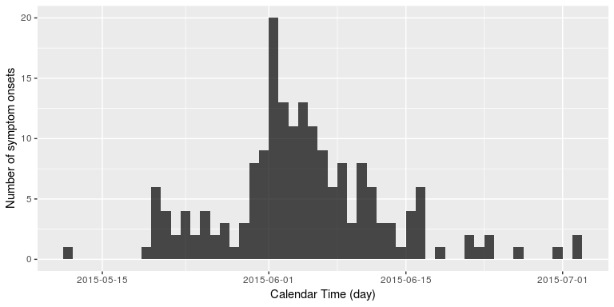
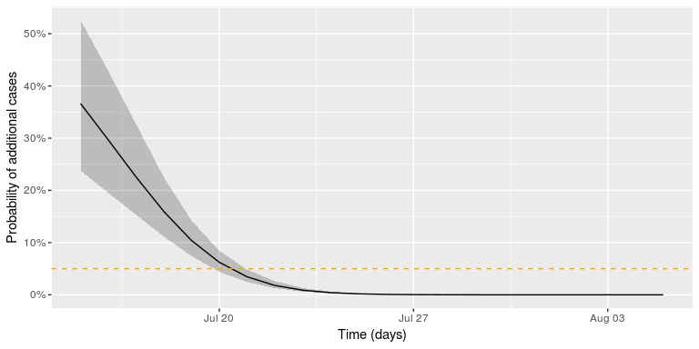

Is this outbreak over?
Motivation
At which time point during an outbreak of a person-to-person transmitted disease can one declare the outbreak as having ended? Answering this question can be important in order to calm the population, re-attract tourists, stop export bans or reduce alertness status. The current WHO method for answering the above question is as follows: a period of two times the longest possible incubation time needs to pass without observing additional cases, before the outbreak can be declared as being over. However, as stated in their paper, Nishiura, Miyamatsu, and Mizumoto (2016) write that this criterion clearly lacks a statistical motivation. As an improvement Nishiura and co-workers formulate a statistical criterion for the decision making based on the serial interval distribution and the offspring distribution of the pathogen responsible for the outbreak.
In what follows we shall quickly describe their method and apply it to their motivating example, which was the 2015 MERS-CoV outbreak in Korea. R code is provided implementing and illustrating the method. Warning: This practical assumes you have a certain knowledge of statistical modelling and statistical inference, i.e. knowledge about distributions, maximum likelihood inference and Monte Carlo simulation.
Statistical Method
Describing the above problem in mathematical notation, let (Y_t) be a count variable representing the number of symptom onset in cases we observe on a given day (t) during the outbreak. The sequence of the (Y_t) is also called the epidemic cuve of the outbreak. Furthermore, let (D={Y_i, i=1,\ldots,n}) be the currently available outbreak data containing the time of symptom onset in in each of the (n) days the outbreak has lasted so far. For simplicity we assume that at the last observation at least some cases were observed, i.e. (Y_n>0). In what follows we will be interested in what happens with (Y_t) for future time points, i.e. time points after the last currently observed onset time. In particular out interest is, whether we expect to observe either zero cases or more than zero cases for (Y_t), (t=n+1,n+2,\ldots).
The important result of Nishiura, Miyamatsu, and Mizumoto (2016) is that the probability (\pi_t = P(Y_t > 0>|>D)) for (t=n+1,n+2,\ldots) can be computed as follows: [ \begin{align} \pit = 1 - \prod{i=1}^n \sum{o=0}^{\infty} f{\text{offspring}}(o; R0, k) \cdot \left[ F{\text{serial}}(t-t_i) \right]^{o}, \end{align} ] where (f_{\text{offspring}}) denotes the probability mass function (PMF) for the number of secondary cases that one primary case induces. It is assumed that this distribution is negative binomial with expectation (R_0>0) and clumping parameter (k>0). In other words, (\operatorname{E}(O)=R_0) and (\operatorname{Var}(O)=R_0 + R0^2/k). Furthermore, (F{\text{serial}}) denotes the CDF of the serial interval distribution of the disease of interest. The serial interval is the time period between the onset of symptoms in the primary and onset of symptoms in the secondary case, see Svensson (2007) for details and definitions.
Once (\pit) is below some pre-defined threshold (c), say (c=0.05), one would declare the outbreak to be over, if no new cases have been observed by time (t). In other words: [ T{\text{end}} = \min_{t>n} { \pi_t < c }. ]
Note that the formulated approach is conservative, because every available case is treated as having the potential to generate new secondary cases according to the entire offspring distribution. In practice, however, observed cases towards the end will be secondary cases of some of the earlier cases. Hence, these primary cases will be attributed as having the ability to generate more secondary cases than they actually have in practice. Another important assumption of the method is that all cases are observed: no asymptomatic cases nor under-reporting is taken into account.
Required packages
The following packages, available on CRAN, are needed for this practical:
tidyverseA set of packages (aka. the hadleyverse) to enhance the necessary data mungingopenxlsxto read.xlsxfiles withoutrJavadependencepbapplyPackage to get a progress bar for lengthy computations done usingapply,sapply, andlapply.
To install these packages, use install.packages and then load them using
library("tidyverse")
library("openxlsx")
library("pbapply")
Data from the MERS-Cov Oubtreak in Korea, 2015
We use the WHO MERS-CoV data available from http://www.who.int/csr/don/21-july-2015-mers-korea/en/ to illustrate the statistical method. For convenience, these data were download and are distributed as part of the RECON learn github account.
linelist <- openxlsx::read.xlsx("../../static/data/MERS-CoV-cases-rok-21Jul15.xlsx", startRow=4)
We skip the first 3 rows as they contain irrelevant header data. After loading the data, additional data munging is needed in order to convert the date-strings to the Date class and fill the missing values in the Date.of.symptoms.onset column as described in the paper.
##Convert all columns containing the String "...Date..." to the Date class
##using the date/month/Year format (in which the data are available)
linelist <- linelist %>%
mutate_if(grepl("Date", names(linelist)), as.Date, format="%d/%m/%Y")
## As written in the @nishiura_etal2016 paper, the missing onset times
## are handled as follows: Whenever the date of illness onset was missing,
## we substitute it with the date of laboratory confirmation.
linelist <- linelist %>%
mutate(Date.of.symptoms.onset =
if_else(is.na(Date.of.symptoms.onset),
Date.of.laboratory.confirmation,
Date.of.symptoms.onset))
At the end of the data munging the first three lines in the data look as follows:
head(linelist, n=3)
## Case.no. Date.of.notification.to.WHO Age Sex Health.care.worker
## 1 1 2015-05-20 68 M No
## 2 2 2015-05-22 63 F No
## 3 3 2015-05-22 76 M No
## Comorbidities Date.of.symptoms.onset Date.of.first.hospitalization
## 1 <NA> 2015-05-11 2015-05-15
## 2 <NA> 2015-05-19 <NA>
## 3 <NA> 2015-05-20 <NA>
## Date.of.laboratory.confirmation Status Date.of.outcome
## 1 2015-05-20 Alive <NA>
## 2 2015-05-20 Alive <NA>
## 3 2015-05-20 Deceased 2015-06-04
Analysis of the MERS-CoV data
The above data is the WHO dataset on the MERS-Cov outbreak in Korea, which occurred during May-July 2015. It contains the information about 185 cases of the MERS-CoV outbreak in Korea, 2015. Using the RECON incidence package it is easy to plot the epicurve based on the date of symptoms onset in the linelist.
inc <- incidence::incidence(linelist$Date.of.symptoms.onset, interval = 1)
plot(inc) + xlab("Calendar Time (day)") + ylab("Number of symptom onsets")

We are now interested in answering the following question: Standing at 2015-07-02, that is the day of the last reported new case with MERS symptoms, how many days without newly reported symptom onsets would we want to wait, before we would declare this outbreak as having ended?
Results
We shall distinguish our results between
- estimating (R_0) and (k) of the offspring distribution and the parameters of the serial interval distribution from data
- computating the probability (\pi_t) given the parameters found in step 1.
Focus of this tutorial is on the later part. Details on the first part is available in the R code from github.
Parameter Estimation of the Offspring and Serial Interval Distributions
The parameters to estimate are the following:
- parameters of the parametric distributional family governing the serial interval distribution - in Nishiura, Miyamatsu, and Mizumoto (2016) this is assumed to be a gamma distribution with parameters (\theta_{\text{serial}} = (\alpha,\beta)’) with expectation (\alpha/\beta) and variance (\alpha/\beta^2)
- parameters of the offspring distribution, which here is assumed to be negative binomial with mean (R_0) and clumping parameter (k)
The first set of parameters are estimated in Nishiura, Miyamatsu, and Mizumoto (2016) by method-of-moment-matching the mean and standard deviation of the serial interval distribution with observed in secondary data - see the technical appendix of the paper for details. The solution for (\alpha) and (\beta) of the gamma distribution can then be found analytically from these values.
#Values for mean and std. deviation (=sqrt(Variance)) found in the paper
E <- 12.6
SD <- 2.8
##Convert to gamma distribution parameters
(theta_serial <- c(alpha=E^2/SD^2, beta=E/SD^2))
## alpha beta
## 20.250000 1.607143
The second part of the estimation task is addressed in Nishiura et al. (2015) by analysing final-size and generation data using a maximum likelihood approach. We will here only implement the methods using the data presented in Figure 1 and Table 1 of the paper. Unfortunately, one cluster size is not immediately reconstructable from the data in the paper, but guesstimating from the table on p.4 of the ECDC Rapid Risk Assessment it appears to be the outbreak in Jordan with a size of 19. The likelihood is then maximized for (\mathbf{\theta}=(\log(R_0),\log(k))’) using the optim function.
As usual in likelihood inference, a numeric approximation of the variance-covariance matrix of (\hat{\mathbf{\theta}}) can be obtained from the Hessian matrix for the loglikelihood evaluated at the MLE. Altogether, we maximize the combined likelihood consisting of 36 as well as the corresponding number of generations by:
theta_mle <- optim(c(log(1), log(1)), ll_combine, outbreaks=outbreaks, control=list(fnscale=-1), hessian=TRUE)
exp(theta_mle$par)
## [1] 0.8264387 0.1277683
Here, ll_combine denotes the log-likelihood function computed for the data contained in outbreaks. For the exact code of these functions please visit the [github source code]() of this practical.
These numbers deviate slightly from the values of (\hat{R}_0=0.75) and (\hat{k}=0.14) reported by Nishiura et al. (2015). One explanation might be the unclear cluster size of the Jordan outbreak, here it would have been helpful to have had all data directly available in electronic form.
Determining the Outbreak End
The (\pi_t) equation of Nishiura, Miyamatsu, and Mizumoto (2016) stated above is implemented below as function p_oneormore. This function requires the use of the PMF of the offspring distribution (implemented as doffspring), which is the PMF of the negative binomial offspring distribution.
###################################################################
## Offspring distribution, this is just the negative binomial PMF.
###################################################################
doffspring <- function(y, R_0, k, log=FALSE) {
dnbinom(y, mu=R_0, size=k, log=log)
}
##########################################################################
## Probability for one or more cases at time t (vectorized for easier use).
##
## @param t Vector of Time points to compute \pi_t for
## @param R_0 Estimated value of the basic reproduction number R_0
## @param k Estimated value of the expected number of offspring k
## @param theta_serial (alpha,beta) vector parametrising the serial interval
## gamma distribution
## @param oMax Maximum value of o to sum in the summation formula
## (instead of infinity)
##########################################################################
p_oneormore <- Vectorize(function(t, R_0, k, theta_serial, oMax=1e4) {
##Init result variable
res <- 1
##Loop over the linelist (this might take a while for long linelists)
for (i in seq_len(nrow(linelist))) {
serial_time <- as.numeric(t - linelist$Date.of.symptoms.onset[i])
cdf <- pgamma(serial_time, theta_serial[1], theta_serial[2])
o <- 0L:oMax
osum <- sum( doffspring(y=o, R_0=R_0, k=k) * cdf^o)
res <- res * osum
}
return(1-res)
},vectorize.args=c("t","R_0","k"))
The function allows us to re-calculate the results of Nishiura, Miyamatsu, and Mizumoto (2016) for the MERS-CoV outbreak:
##Results from the Nishiura et al. (2015) paper
##R_0_hat <- 0.75 ; k_hat <- 0.14
##Use MLE found with the data we were able to extract.
R_0_hat <- exp(theta_mle$par[1])
k_hat <- exp(theta_mle$par[2])
## Compute probility for one or more cases on a grid of dates
df <- data_frame(t=seq(as.Date("2015-07-15"), as.Date("2015-08-05"), by="1 day"))
df <- df %>%
mutate(pi = p_oneormore(t, R_0=R_0_hat, k=k_hat, theta_serial=theta_serial, oMax=250))
## Look at the result
head(df, n=3)
## # A tibble: 3 x 2
## t pi
## <date> <dbl>
## 1 2015-07-15 0.366
## 2 2015-07-16 0.297
## 3 2015-07-17 0.226
We can embed estimation uncertainty originating from the estimation of (R_0) and (k) by adding an additional bootstrap step with values of ((\log R_0, \log k)’) sampled from the asymptotic normal distribution of the MLE. This distribution has expectation equal to the MLE and variance-covariance matrix equal to the observed Fisher information. Pointwise percentile-based 95% confidence intervals are then easily computed from the samples. The figure below shows this 95% CI (shaded area) together with the (\pi_t) curve. The github code contains the details of generating the sample and drawing the curve using ggplot.

Altogether, the date where we would declare the outbreak to be over, given a threshold of (c=0.05), is found as:
(tEnd <- df2 %>% filter(`quantile.97.5%` < c_threshold) %>% slice(1L))
## t pi quantile.2.5% quantile.97.5%
## 1 2015-07-21 0.03452785 0.02458372 0.04849207
In other words, given the assumptions of the model and the chosen threshold, we would declare the outbreak to be over, if no new cases are observed by 2015-07-21. The adequate choice of (c) as cut-off in the procedure depends on what is at stake. Hence, choosing (c=0.05) without additional thought is more than arbitrary, but a more careful discussion is beyond the scope of this small practical tutorial.
Discussion
The present practical introduced the statistical modelling based approach by Nishiura, Miyamatsu, and Mizumoto (2016) for declaring the end of a person-to-person transmitted disease outbreak such as MERS-Cov, Ebola, etc. If the considered outbreak has a different mode of transmission, e.g. foodborne or originates from a point-source, then different formulas apply, see e.g. Brookmeyer and You (2006). The blog post, on which this practical is based, contains an additional hierarchical modelling approach with simulation based inference. Altoghether, we hope that the avaibility of the method in R might be helpful in future outbreak analyses.
About this document
Contributors
- Michael Höhle, Stockholm University: RECON modified version of the blog post No Sleep During the Reproducibility Session
Contributions are welcome via pull requests. The source file is hosted on github.
Legal stuff
License: This work is licensed under a Creative Commons Attribution-ShareAlike 4.0 International License. The markdown+Rknitr source code of this blog is available under a GNU General Public License (GPL v3) license from github.
Copyright: Michael Höhle, 2018
References
Brookmeyer, R., and X. You. 2006. “A hypothesis test for the end of a common source outbreak.” Biometrics 62 (1): 61–65. doi:10.1111/j.1541-0420.2005.00421.x.
Nishiura, H., Y. Miyamatsu, and K. Mizumoto. 2016. “Objective Determination of End of MERS Outbreak, South Korea, 2015.” Emerging Infect. Dis. 22 (1): 146–48. doi:10.3201/eid2201.151383.
Nishiura, H., Y. Miyamatsu, G. Chowell, and M. Saitoh. 2015. “Assessing the risk of observing multiple generations of Middle East respiratory syndrome (MERS) cases given an imported case.” Euro Surveill. 20 (27). doi:10.2807⁄1560-7917.ES2015.20.27.21181.
Svensson, Å. 2007. “A note on generation times in epidemic models.” Math Biosci 208 (1): 300–311. doi:10.1016/j.mbs.2006.10.010.